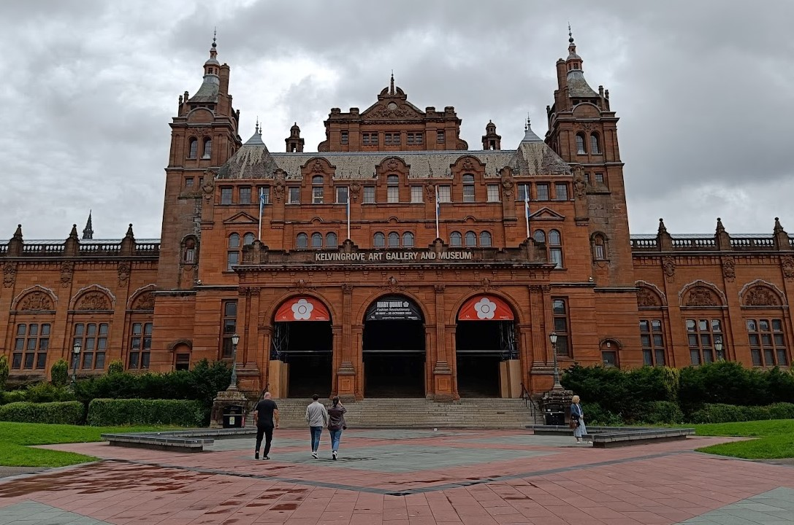
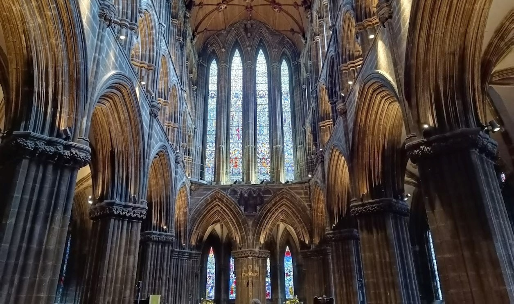

Scotland consisted of a lovely couple of days in Glasgow and Edinburgh.
We started off by going to Kelvingrove Art Gallery and Museum in Glasgow,
containing a variety of displays encompassed within a stunning building. We
spent a couple of hours going around the museum, although there was so much to
do that we could’ve easily extended our time there if we wanted to. We were
lucky enough to go just at the right time as we got to listen to an organist
playing some beautiful pieces inside the museum.

From the museum, it was a short walk to get to Glasgow university, which was
full of incredible architecture. Despite it being August, the campus was full
of students which made me quite nostalgic about my own university experience.
We also went to Glasgow Botanic Gardens, a very peaceful area filled with lots
of beautiful plants to see. One of my personal favourite areas in Glasgow was the
cathedral, which was beautiful both on the outside and on the inside.

One of the days in Scotland was spent in Edinburgh, with the weather luckily
being on our side. Our first stop was Edinburgh castle, which took quite a lot
of uphill walking to get to (and was obviously worth the walk in the end). It had
plenty of history to tell and gave amazing views of the city.
Later on, we went around the city and to a science museum which naturally brought
out the nerds in us. The city itself was very busy as we went during the
Fringe festival, but it was nice to see some performances on the streets whilst
exploring the city. All in all, the trip to Scotland was worth it and having a
close friend there gives me an excuse to visit again many times ;)